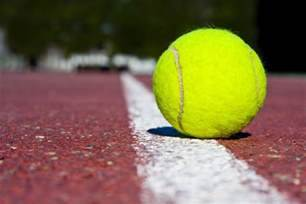
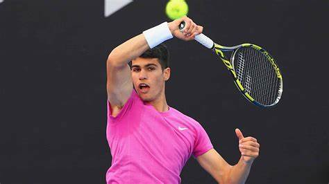

el tenis es un deporte, pero, ¿que es un deporte? El deporte es la práctica de un ejercicio
físico regulado y competitivo. El deporte puede ser recreativo, profesional o como una forma
de mejorar la salud. El deporte al abarcar varias áreas de nuestra sociedad conlleva una
complejidad simbólica en su dimensión social y cultural ya que actualmente el deporte es una
práctica, un espectáculo y un estilo de vida.
desarrollo
El tenis es un deporte que se practica entre dos jugadores o dos parejas en una pista llana y
rectangular.
Consiste en golpear una pelota con una raqueta y que pase por encima de una red
intentando que bote dentro del campo contrario de tal manera que el adversario no la pueda
devolver.
motivación
elegí este tema porque jugar tenis es uno de mis hobbies favoritos y creo que no sería
un tema dificil para ponerlo como tema en este trabajo

Tenis, un deporte tanto competitivo, como recreativo
ranking
09/10/2022
contexto
Este ranking consiste en las 10 personas con el mejor ranking en la asociación de tenis
profesional (ATP)
Novak Djokovic
Hubert Hurkacz
Felix Auger-Aliassime
Taylor Fritz
Andrey Rublev
Daniil Medvedev
Stefanos Tsitsipas
Casper Ruud
Rafael Nadal
Carlos Alcaraz

Carlos Alcaraz, actual top 1 del ranking masculino
referencias
20/11/2022
aqui podrás encontrar algunas páginas que te puedan ayudar a saber más sobre este tema
autor: Diego Fernando Alvarez Villafade
nombre del video: reglamento general del tenis
bueno, yo creo que la informacion del video esta bastante comleta y bastante bien explicada
para ser una explicacion breve, aunque le faltan otro tipo de reglas como: que pasa si en
el saque la pelota toca la red y pasa si cae hacia el otro lado o que pasa si cae de tu
lado.
lo que intento explicar la persona del video eran las reglas del tenis, la informacion esta
bien lograda y cumple con las expectativas del video
investigación
21/11/2022
los 4 torneos más importantes del tenis
a continuación, nombraré los 4 torneos más importantes del tenis. estos 4 torneos son
tambien conocidos como Grand Slam, los los torneos más grandes y más
importantes para cualquier tenista, a lo que a estos torneo se refiere es de los torneros
más dificiles de ganar, solo una pequeña cantidad de personas han podido lograr esta hazaña,
pero no sólo es dificil ganar el torneo sino que tambien hay muchos tenistas profesionales
que no pueden entrar al torneo porque no pudieron clasificar para el cuadro principal,
tambien son los torneos mejor organizados y con mayor prestigio, por ende los más costosos
de entrar como aficionado.
Australian Open
El Australian Open es uno de los Grand Slams, este se juega o está situado
en Melbourne, Australia, hay mucha gente que cree que se juega en sidney sólo por que es
la ciudad más conocida del pais, este es el primer grand slam que se juega en el año, en
Enero para ser más especificos. otra cosa a destacar de este torneo es
que se juega en superficie "dura", la superficie más común en muchas partes
del mundo. los jugadores que más han ganado este torneo son: en la rama varonil es Novak
Djokovic con 7 y en la rama femenil es Margaret Smith con 11 victorias
Roland Garros
El abierto de Paris, tambien conocido mayormente cómo Roland Garros es el
segundo Grand Slam y el más peculiar a mi parecer, ya que es el único Grand Slam que no tiene
en su nombre el nombre de la ciudada cede del torneo. El nombre de Roland
Garros se le atribuye a un aviador bastante importante de francia, otra de sus
peculiaridades es que se juega en arcilla, tambien llamada tierra batida,
es una superficie en la cual es más fácil derrapar y tambien la pelota se frena un poco con
la fricción que hace con la arcilla, así haciendo que en esta superficie la pelota vaya más
lento
Wimbledon
Este es el tercer Grand Slam que se juega en el año, dos meses despues que el anterior, es
una peculiaridad que tiene este torneo es que se juega en pastola superficie
más exclusiva de jugar, este torneo esta organizado por el All England Lawn Tennis
desde 1877. este es el Grand Slam más antiguo y prestigioso en todo el mundo. Otra
culaidad que tiene el torneo es que es el único torneo de todos que tiene como regla vestirse
completamente de blanco. Otra cosa que tiene este torneo es que si lo ganas,te dan una
membresía para poder jugar en esas canchas de por vida.
US Open
El último torneo de esta magnitud, pero este es sin duda el torneo más importante de los
cuatro y por ende el más importante de todos los torneos de este deporte. Este se disputa en
la ciudad de Nueva York, el torneo se juega entre agosto y septiembre, es el torneo con la
mayor recompensa en dinero de todos los torneos, mas o menos son como 2.4 millones de
dólares. El Us Open es el segundo Grand Slam que se juega en cancha dura, pero a lo largo
del tiempo fue cambiando de superficies desde 1978, que fue cuando inició el torneo.
 referencias
referencias investigación
investigación